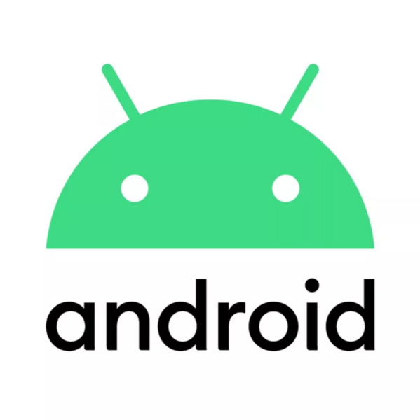

Hi, I'm Mokhtari Hadj Mohamed
A versatile software engineer with a passion for mobile app development, particularly in Android. I hold a Master's degree in Software Engineering and a Bachelor's degree in Information Systems. My technical skills encompass a wide range of languages and frameworks, including Java, Python, Kotlin, Android, Flutter, Dart, Firebase, SQL, HTML, CSS, JavaScript, PHP, and Flask.
Over the years, I have contributed to several notable projects such as Orani Argo, Mol-Hirfa, and Joraate-Insulins. In addition to my technical expertise, I am also a creative filmmaker and video creator with a keen interest in photography.
Looking ahead, my professional goal is to become a proficient project manager and to bring my own projects to life. I am committed to continuous learning and contributing to team objectives.
Best skill on


- 